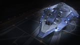

Трюм под руду (на практике)
~200–260 т
Один из лучших шахтёрских кораблей в игре. На корпус для средней площадки помещаются полный комплект инструментов и большой трюм под руду. При этом Python может отбиться от пиратов, которые охотятся на шахтёров с грузом. Он немного уступает специализированному Type-11 и большим шахтёрам, но обходит остальные средние корабли. Редкий шахтёр, которому не нужно бежать при нападении.

Оценка пригодности корабля от 1 до 100 учитывает его полностью улучшенную сборку и сравнивает её с другими кораблями в этой роли. Подробнее: как оцениваются корабли.
Добыча идёт медленно, корабль часто стоит на месте и привлекает пиратов. Python справляется с ними лучше большинства. В три больших крепления можно поставить весь набор для добычи:лазеры, подповерхностные ракеты, пусковую установку сейсмических зарядов и абразивный бластер. В отсеках хватает места под переработчик, контроллеры дронов и большой запас руды. При этом остаются щит и оружие, чтобы развернуться и уничтожить пирата, перехватившего тебя во время добычи.
Средняя площадка позволяет садиться на большинстве станций у колец, а мощный щит помогает пережить минуты, когда ты уязвим при подрыве ядра. Руды он везёт меньше больших кораблей и облегчённого Type-8и стоит дороже. Но среди средних шахтёров трудно найти такое сочетание оснащения и самообороны. Для добычи дорогих ядер в опасных кольцах Python — надёжный универсал.
Подрыв ядер и лазерная добыча в кольцах с пиратами, зоны пейнита, платины и трития и любые рейсы, где сохранить груз не менее важно, чем добыть его.
Четыре причины выбрать Python для добычи:
По вместимости трюма Python уступает большим шахтёрам (Cutter, Type-9, Anaconda) и даже облегчённому Type-8. По тоннажу за рейс он не первый, а корпус за ~55 млн кредитов дороже специализированных грузовых шахтёров. Его преимущество — возможности добычи и самооборона на средней площадке. За максимальным тоннажем или минимальной ценой лучше идти к другим кораблям.
Полный набор инструментов, щит примерно в 1 100 МДж после улучшений и оружие дают самооборону на средней площадке без требований к рангу. До вершины рейтинга не хватает трюма, уступающего специализированным и большим шахтёрам.
90/100 — итог по критериям добычи в порядке их важности. У каждого критерия есть вес (его доля из 100). Баллы по нему зависят от того, как корабль показал себя на фоне остальных. Сумма баллов даёт итоговую оценку.
| Критерий | Баллы | Почему столько |
|---|---|---|
| Полезная вместимость под руду | 27/35 | Максимум около 294 т, а после установки переработчика и контроллеров остаётся примерно 200–260 т руды. Для среднего корпуса это хорошо, но Type-11, большие Cutter и Type-9 (~790 т) и даже средний Type-8 (~406 т) везут больше. |
| Вместимость под инструменты | 25/25 | Три больших и два средних крепления вместе с вместительными отсеками позволяют одновременно поставить лазеры, сейсмическую и подповерхностную установки, абразивный бластер, переработчик, несколько контроллеров и сканер. Комплект не приходится урезать. |
| Живучесть | 15/15 | Главное преимущество: щит примерно в 1 100 МДж и выше после улучшений и мультипушка позволяют уничтожать пиратов, а не бежать при перехвате. Для шахтёрских кораблей такая защита — редкость. |
| Площадка и доступ | 15/15 | Средней площадки хватает для аванпостов возле колец, недоступных большим шахтёрам. Ранг и разрешение не нужны. |
| Цена и специализация | 8/10 | Корпус стоит ~55 млн кредитов, полная сборка — ~88 млн. Дороже грузовых шахтёров в пересчёте на тонну, зато ранг не нужен, а после добычи тот же корпус можно переоснастить для торговли, боя или исследований. |
| Взвешенный итог | 90/100 | Эта сумма совпадает с общей оценкой корабля в этой роли. |
Вес критерия отражает приоритеты авторов гайда, а не формулу игры. Длина полосы показывает, какую долю от максимума корабль набрал по этому критерию. Подробнее: как оцениваются корабли.
Таблицы сравнивают корабли именно для добычии разделяют их по размеру посадочной площадки. Столбец Макс. груз указывает максимальный груз руды в тоннах. Пригодность оценивается по общей шкале сайта от 1 до 100.
| Корабль | Класс | Макс. груз | Плюсы и минусы | Оценка |
|---|---|---|---|---|
| Type-11 Prospector | Средняя | ~288 т | Выше оценка; оснащение; доступ к площадкамЦена | 95 |
| Python этот | Средняя | ~294 т | — отправная точка для сравнения | 90 |
| Krait Mk II | Средняя | ~230 т | Живучесть; доступ к площадкамНиже оценка; трюм | 84 |
| Type-8 Transporter | Средняя | ~406 т | Трюм; оснащениеНиже оценка; живучесть | 84 |
| Krait Phantom | Средняя | ~190 т | Доступ к площадкам; оснащениеНиже оценка; живучесть | 70 |
| Corsair | Средняя | ~318 т | Живучесть; доступ к площадкамНиже оценка; цена | 68 |
| Keelback | Средняя | ~98 т | Живучесть; доступ к площадкамНиже оценка; трюм | 68 |
| Asp Explorer | Средняя | ~130 т | Оснащение; доступ к площадкамНиже оценка; живучесть | 64 |
| Type-6 Transporter | Средняя | ~114 т | Цена; доступ к площадкамНиже оценка; живучесть | 62 |
Из девяти оценённых кораблей для средней площадки лидирует Type-11 Prospector (95). Все соперники в таблице садятся на такие же площадки. С них и стоит начинать сравнение.
| Корабль | Класс | Макс. груз | Плюсы и минусы | Оценка |
|---|---|---|---|---|
| Imperial Cutter | Большая | ~794 т | Выше оценка; оснащение; живучестьПосадочная площадка | 92 |
| Type-9 Heavy | Большая | ~790 т | Трюм; ценаЖивучесть | 90 |
| Anaconda | Большая | ~470 т | Оснащение; живучестьНиже оценка; доступ к площадкам | 86 |
| Type-7 Transporter | Большая | ~310 т | Цена; оснащениеНиже оценка; живучесть | 78 |
| Panther Clipper Mk II | Большая | ~662 т | Трюм; оснащениеНиже оценка; цена | 77 |
| Imperial Clipper | Большая | ~250 т | Цена; живучестьНиже оценка; доступ к площадкам | 70 |
| Type-10 Defender | Большая | ~534 т | Живучесть; оснащениеНиже оценка; цена | 70 |
| Federal Corvette | Большая | ~618 т | Живучесть; трюмНиже оценка; цена | 64 |
| Caspian Explorer | Большая | ~434 т | Оснащение; живучестьНиже оценка; цена | 60 |
Из девяти оценённых кораблей для больших площадок лидирует Imperial Cutter (92). Они выигрывают по характеристикам, но требуют больше денег и больших площадок.
| Корабль | Класс | Макс. груз | Плюсы и минусы | Оценка |
|---|---|---|---|---|
| Cobra Mk V | Малая | ~110 т | Доступ к площадкам; оснащениеНиже оценка; трюм | 58 |
| Cobra Mk III | Малая | ~64 т | Доступ к площадкам; ценаНиже оценка; живучесть | 52 |
| Adder | Малая | ~30 т | Доступ к площадкам; ценаНиже оценка; живучесть | 48 |
Из трёх оценённых кораблей для малых площадок лидирует Cobra Mk V (58). Это более дешёвые корпуса для небольших площадок. Характеристики скромнее, зато требования к посадке другие.
Корпус Python за ~55,3 млн кредитов дороже грузовых шахтёров, но ранг не нужен. Полная сборка с инструментами, переработчиком, контроллерами дронов, грузовыми стеллажами и щитом для самообороны стоит около 88 млн кредитов.
Универсальность оправдывает расходы: тот же корпус добывает, торгует, воюет и исследует. Если важен только тоннаж, Type-8 или большой шахтёр обходится дешевле на тонну. Python оправдывает цену, если нужны самооборона и возможность сменить занятие.
Около 88 млн кредитов за шахтёра, который отбивается от пиратов и легко меняет роль. Платишь за возможности и выживание, а не только за тоннаж.
Полный комплект для лазерной добычи и подрыва с оружием и мощным щитом для самообороны. Начальная сборка требует только покупок, класс A — рабочий вариант. Инженерные улучшения повышают подвижность и защиту и снижают нагрев. Сами инструменты почти не выигрывают от улучшений.
| Отсек | Начальная · только покупка | Класс A · без улучшений | С инженерными улучшениями | Примечания |
|---|---|---|---|---|
| Оружейные крепления | ||||
| Большое 1 | 2D Добывающий лазер (неподвижный) | 2D Добывающий лазер (неподвижный) | (нет чертежа улучшения) | Инструмент для лазерной добычи. Полезных инженерных улучшений для него нет, поэтому оставь штатным. |
| Большое 2 | — | 2B Пусковая установка сейсмических зарядов (неподвижный) | (нет чертежа улучшения) | Установка раскалывает дорогие ядра. Полезных улучшений нет, оставь штатной. |
| Большое 3 | — | 3C Мультипушка (на карданном подвесе) | G5 Повышенная мощность + Коррозионные снаряды | Оружие для самообороны Python. «Повышенная мощность» и «Коррозионные снаряды» помогают дать отпор пирату даже с одного большого крепления. |
| Среднее 1 | — | 2B Ракета для извлечения подповерхностных залежей (неподвижный) | (нет чертежа улучшения) | Ракета извлекает подповерхностные залежи. Это добывающий инструмент, оставь штатным. |
| Среднее 2 | — | 1D Абразивный бластер (неподвижный) | (нет чертежа улучшения) | Бластер сбивает поверхностные залежи с расколотого ядра. Оставь штатным. |
| Внешние крепления | ||||
| Крепление 1 | — | 0A Анализатор импульсных волн | (нет чертежа улучшения) | Анализатор подсвечивает астероиды с залежами в кольцах. Внешний сканер не улучшается у инженеров. |
| Крепление 2 | — | 0A Усилитель щита | G5 Усиленная конструкция + Суперконденсаторы | «Усиленная конструкция» повышает прочность двухконтурного щита в МДж и прикрывает корабль, пока тот уязвим при подрыве ядра. |
| Крепление 3 | — | 0A Усилитель щита | G5 Усиленная конструкция + Суперконденсаторы | Второй усилитель с «Усиленной конструкцией» даёт заметную прибавку к щиту за небольшую цену. |
| Крепление 4 | — | 0I Теплоотводная катапульта | G1 Дополнительный боезапас (без экспериментального эффекта) | Необязательно. Дополнительный боезапас даёт больше теплоотводов. Они снимают нагрев при скрытном ходе и помогают сбросить температуру. |
| Основные модули | ||||
| Обшивка | Лёгкий сплав | Лёгкий сплав | Облегчение 5-й ступени (без экспериментального эффекта) | |
| Энергетическая установка | 7E Энергетическая установка | 7A Энергетическая установка | G5 Низкие выбросы + Рассеивание тепла | Класс A питает инструменты, дронов, щит и оружие одновременно. «Низкие выбросы» снижают нагрев и заметность при долгой добыче, а «Рассеивание тепла» дополнительно отводит тепло. |
| Маневровые двигатели | 6E Маневровые двигатели | 6A Маневровые двигатели | G5 Примени «Грязную настройку» + Форсированные двигатели | Класс A с улучшением грязной настройкой помогают перестраиваться между астероидами и уходить от пиратов скоростью или манёвром. |
| Рамочно-сместительный двигатель (FSD) | 5E Рамочно-сместительный двигатель (FSD) | 5A Рамочно-сместительный двигатель (FSD) | G5 «Увеличенная дальность» + Управление массой | Класс A с улучшением улучшением «Увеличенная дальность» помогают добираться до дальних зон концентрации и везти руду домой. «Управление массой» увеличивает дальность с полным трюмом. |
| Система жизнеобеспечения | 4E Система жизнеобеспечения | 4D Система жизнеобеспечения | G5 Облегчение (без экспериментального эффекта) | Поставь класс D ради меньшей массы. Облегчение снижает её ещё сильнее. У системы жизнеобеспечения нет экспериментального эффекта. |
| Распределитель энергии | 7E Распределитель энергии | 7A Распределитель энергии | G3 Упор на двигатели + Суперпроводники | Сначала поставь класс A: добывающие лазеры и дроны требуют много энергии. «Упор на двигатели» и «Суперпроводники» обеспечивают запас энергии для форсажа и инструментов. |
| Сенсоры | 6E Сенсоры | 6D Сенсоры | G5 Облегчение (без экспериментального эффекта) | Поставь класс D и «Облегчение». Шахтёру не нужна дальность сенсоров, лучше снизить массу. |
| Топливный бак | 5C Топливный бак | 5C Топливный бак | (нет чертежа улучшения) | Штатный бак класса C. Вместимость фиксированная, инженерных улучшений нет. |
| Дополнительные отсеки | ||||
| Размер 6 | 6E грузовой стеллаж | 6E грузовой стеллаж | (нет чертежа улучшения) | Необязательно. Дополнительное место под груз пригодится при перевозках. Грузовые стеллажи нельзя улучшить у инженеров. |
| Размер 6 | — | 6E грузовой стеллаж | (нет чертежа улучшения) | Необязательно. Дополнительное место под груз пригодится при перевозках. Грузовые стеллажи нельзя улучшить у инженеров. |
| Размер 6 | — | 6C Генератор двухконтурного щита | G5 Усиленный + Быстрая зарядка | Двухконтурный щит быстро восстанавливается под огнём. «Усиленный» и «Быстрая зарядка» дают прочную, быстро восстанавливающуюся защиту на время подрыва. |
| Размер 5 | — | 4A Переработчик | G5 Защищённый (без экспериментального эффекта) | Необязательно. «Защищённый» повышает прочность переработчика. Он превращает собранные обломки в товар. |
| Размер 5 | — | 5E грузовой стеллаж | (нет чертежа улучшения) | Необязательно. Дополнительное место под груз пригодится при перевозках. Грузовые стеллажи нельзя улучшить у инженеров. |
| Размер 4 | — | 3A Контроллер дронов-сборщиков | G5 Облегчение (без экспериментального эффекта) | Необязательно. «Облегчение» уменьшает массу контроллера. Он запускает дронов-сборщиков. |
| Размер 3 | — | 3A Контроллер дронов-сборщиков | G5 Облегчение (без экспериментального эффекта) | Необязательно. «Облегчение» уменьшает массу контроллера. Он запускает дронов-сборщиков. |
| Размер 3 | — | 3A Контроллер дронов-разведчиков | G5 Облегчение (без экспериментального эффекта) | Необязательно. «Облегчение» уменьшает массу контроллера. Он запускает дронов-разведчиков. |
| Размер 2 | — | 1I подробный сканер поверхности 1I | G5 Увеличенный радиус сканирования зондов (без экспериментального эффекта) | Необязательно. Улучшение увеличивает площадь, которую покрывает каждый зонд при составлении карты планеты. |
| Размер 1 | — | 1A Контроллер дронов-сборщиков | G5 Облегчение (без экспериментального эффекта) | Необязательно. «Облегчение» уменьшает массу контроллера. Он запускает дронов-сборщиков. |
| Планировщики и экспорт | ||||
| Открыть в Coriolis | открыть | открыть | открыть | Открывает сборку на coriolis.io. |
| Открыть в EDSY | открыть | открыть | открыть | Открывает сборку на edsy.org. |
| Скопировать SLEF | Копирует выбранную сборку в формате экспорта оснащения корабля (SLEF). | |||
Полный комплект шахтёра: лазеры и установка зарядов для обоих способов добычи, анализатор импульсных волн для поиска целей, переработчик, контроллер разведчиков и несколько контроллеров сборщиков для быстрого сбора. Главное отличие Python — оружие и мощный щит для отпора при перехвате. Остальное место под руду.
Купи корпус и поставь один добывающий лазер 2D (неподвижный) на первое большое крепление. Оставь штатные основные модули класса E, обшивку из лёгкого сплава и топливный бак 5C.
Поставь один грузовой стеллаж 6E и больше ничего пока не ставь. Установку сейсмических зарядов, подповерхностную ракету, абразивный бластер, мультипушку для самообороны, анализатор импульсных волн, усилители щита, переработчик, контроллеры дронов и двухконтурный щит добавишь в сборке класса A.
Это минимум, чтобы вылететь и начать лазерную добычу. Полный комплект, оружие и щит появятся с классом A. Обшивку оставь штатной из лёгкого сплава: шахтёру незачем её менять.
Что улучшить в первую очередь на шахтёре с самообороной:
Добыча Лазеры, дроны и оружие требуют много энергии. Сначала поставь распределитель и установку класса A, чтобы снабжать весь комплект, затем добавь щит. Оставь обшивку из штатного лёгкого сплава. Тяжёлая броня уменьшит дальность и ухудшит манёвры при посадке, а шахтёра защищает прежде всего двухконтурный щит, не корпус.
Инженерных улучшений немного, и они относятся к кораблю, а не к инструментам: добывающие модули почти ничего от них не получают. Felicity Farseer улучшает FSD. Закрепляй чертежи для удалённого применения с 1-й по 5-ю ступень.
| Модуль | Чертёж | Экспериментальный эффект | Инженер |
|---|---|---|---|
| Распределитель энергии (7) | Упор на двигатели (G3) | Суперпроводники | The Dweller |
| Энергетическая установка (7) | Низкие выбросы (G5) | Рассеивание тепла | Hera Tani |
| Двухконтурный щит (6) | Усиленный (G5) | Быстрая зарядка | Lei Cheung |
| Маневровые двигатели (6) | Примени «Грязную настройку» (G5) | Форсированные двигатели | Professor Palin / Mel Brandon |
| Рамочно-сместительный двигатель (FSD) (5) | «Увеличенная дальность» (G5) | Управление массой | Felicity Farseer |
| Усилители щита | Усиленная конструкция (G5) | Суперконденсаторы | Didi Vatermann |
| Мультипушка (3) | Повышенная мощность (G5) | Коррозионные снаряды | Tod McQuinn |
| Обшивка | Облегчение (ступень 5) | — | Selene Jean |
Небольшой расход. Нужны только чертежи подвижности и защиты, добывающие инструменты остаются штатными. Собирать материалы для улучшений оружия не нужно. Если запасы есть, собирать их заново не придётся. При необходимости сверь количество по каждому чертежу.
Ориентировочные показатели для трёх сборок. Точный результат зависит от оснащения:
| Показатель | Начальная | Класс A | С инженерными улучшениями |
|---|---|---|---|
| Руда за рейс (т) | ~60 | ~220 | ~260 |
| Выживание при встрече с пиратами | нет | да | уверенно |
| Щит (МДж) | нет | ~580 | ~1,100+ |
| Обшивка | Облегчение | Облегчение | облегчённая |
| Инструменты на креплениях | только лазер | все | все |
| Посадочная площадка | средняя | средняя | средняя |
После улучшений Python везёт около 260 т руды под щитом в 1 100 МДж и с оружием. Он раскалывает ядра в опасных кольцах и уничтожает пиратов, которые охотятся на груз. Обшивка во всех вариантах остаётся штатной из лёгкого сплава ради дальности и удобства посадки. Защиту даёт двухконтурный щит, не корпус. Большие корабли возят больше, но не добывают с такой защитой на средней площадке.
Подойдёт металлическое или ледяное кольцо с нетронутыми запасами. От домашней базы Python легко долетит до добывающей системы, переработает руду и довезёт её домой, отбиваясь от пиратов.
Python — шахтёр, который умеет постоять за себя. На нём помещаются все инструменты, полный комплект переработки и дронов, большой трюм, щит и оружие, а для посадки хватает средней площадки. Он может уничтожить пирата, охотящегося за рудой. Большие корабли везут больше, но уступают в гибкости и безопасности. Для добычи дорогих ядер в опасных кольцах без сопровождения Python — один из лучших средних кораблей.
Цифры в статье сверены авторами оригинала с источниками ниже.